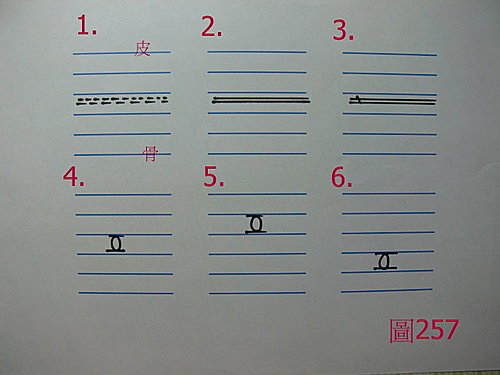

問答錄 161：脈圖的疑問
作者：陳建元
或問：虛人的脈往往細窄，浮部無脈沉部無脈，只有中部有脈動。那和老師所提倡的五層脈有衝突嗎？

答：
這本來就沒有衝突，把到什麼脈？在哪邊把到的？都是一律要忠實的記錄下來。
現在假設以脾脈的一部脈為例（6部脈皆然），〈圖257〉、〈圖258〉。
例1. 譬如虛人的脈往往細窄，浮部無脈沉部無脈，只有中部有脈動。那中部這個脈動有力量嗎？如果力量也是軟軟的不強，則記錄為〈圖257之1〉。
例2. 譬如虛人的脈往往細窄，浮部無脈沉部無脈，只有中部有脈動，那中部這個脈動的邊緣是清楚的，就這麼細細一條，那就記錄成〈圖257之2〉。
例3. 譬如虛人的脈往往細窄，浮部無脈沉部無脈，只有中部有脈動，那中部這個脈動的邊緣是清楚的，就這麼細細一條，但是弦直的硬度明顯，那就記錄成〈圖257之3〉。
例4. 譬如虛人的脈，有時候也有可能是寬大軟而脈緣不清楚的虛脈，那如果一樣是浮部無脈沉部無脈，只有中部的脈動較明顯，那就記錄成〈圖257之4〉。
例5. 譬如虛人的脈，也是寬大軟而脈緣不清楚的虛脈，但在脈位上，第1、3、4、5層的脈動都不明顯，卻只有顯示在第2層較明顯，那就忠實的記錄成〈圖257之5〉。
例6. 譬如虛人的脈，也是寬大軟而脈緣不清楚的虛脈，但在脈位上，第1、2、3、5層的脈動都不明顯，只有顯示在第4層較明顯，那就忠實的記錄在第4層，其餘脈位既然脈象不明顯，當然就不用記錄，即〈圖257之6〉。
例7. 譬如虛人的脈，也是寬大軟而脈緣不清楚的虛脈，但在第2層、第3層都有把到，那你就是要忠實的紀錄第2層、第3層都有虛脈，而第1、4、5層既然都沒有東西，當然就不用紀錄。即〈圖258之1〉。
例8. 譬如虛人的脈往往細窄，浮部無脈沉部無脈，只有中部有脈動。但這次這個細窄，比〈圖257之1〉的那個細窄更細，幾乎是蛛絲那種細軟無力了，那就記錄成〈圖258之2〉。
例9. 同例8.，又譬如在這個蛛絲之下的第4層處，發現還有一個明顯的虛脈，而第1、2、5層的脈都不明顯，那當然就記錄成〈圖258之3〉。
例10. 譬如你只在第3層把到一個滑脈，其餘地方的脈都不明顯，那就記錄成〈圖258之4〉。
例11. 譬如在第2層、第3層都把到滑脈，其餘地方的脈都不明顯，那就記錄成〈圖258之5〉。
例12. 譬如在第3層、第4層、第5層都把到滑脈，其餘地方的脈都不明顯，那就記錄成〈圖258之6〉。
在部落格中的所有地方，這些畫脈圖的五層脈體例都是一致的，都要忠於患者臨床上的真實樣貌而記錄下來，簡單的脈畫起來就簡單，複雜的脈畫起來就複雜，這些複雜或簡單，不是醫者自己決定的，而是由病患的病機來決定的。像擺在醫案區的這些，就是比較複雜的：請參看藥王脈學醫案兵棋推演總目錄。
【引用請先來信告知徵求同意，若有涉及販售營利等商業行為，版權所有拷貝盜用必究。】
【藥王脈學講壇】http://blog.xuite.net/drjychen/twblog